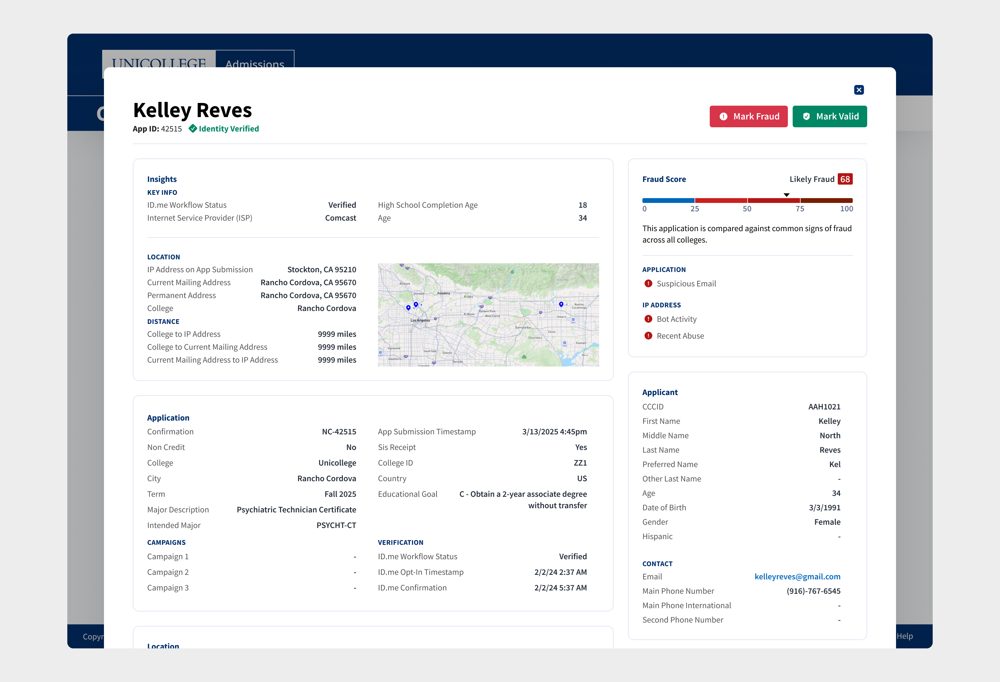
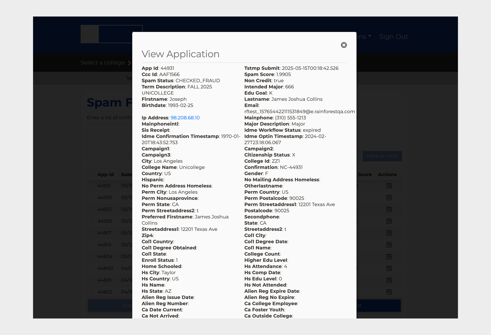
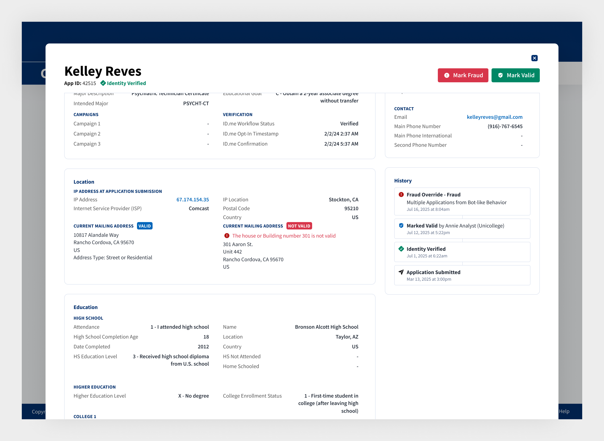
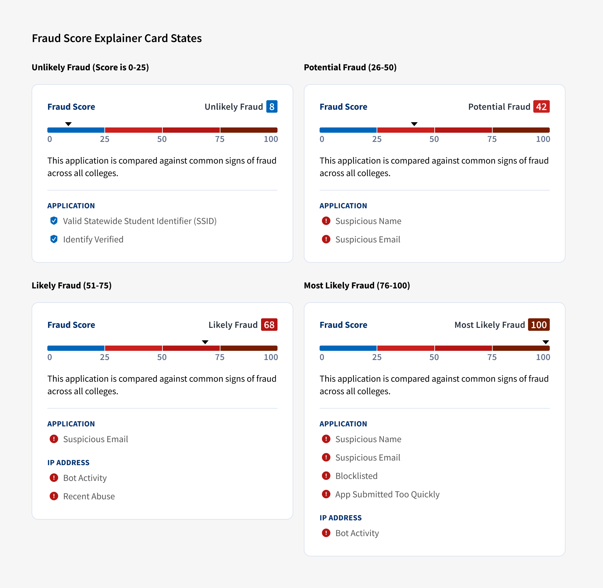
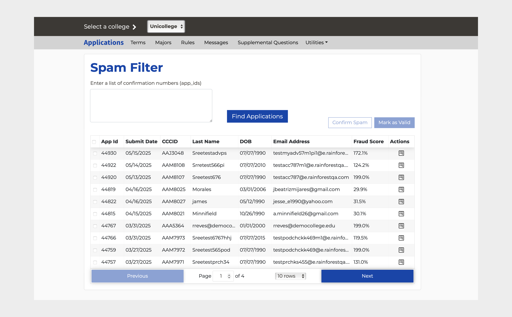
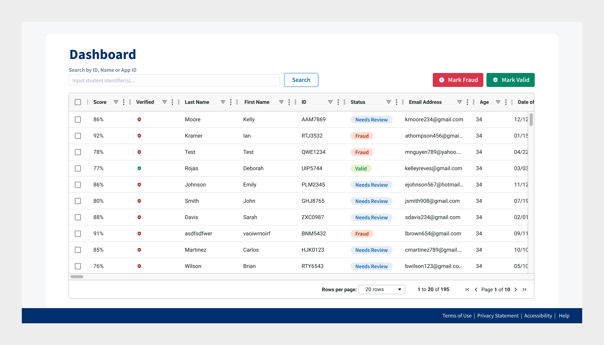

Flagging Fake College Applications

In 2025, I led research and redesign of a fraud detection tool over 4 months for a large college system with over 2 million students enrolled. Fraudsters scammed over $2.5 million in state aid in 2024 by submitting fake student apps to win financial aid. Because of these "ghost students" taking up class seats, professors and students would sometimes show up to near-empty classrooms. On top of Student applications, had swelled by over 64% year-over-year and fraud analysts were struggling to keep up.
The college system had an outdated tool fraud analysts would use to review student application metadata and mark applications fraud or valid. The goal of the redesign was to improve the speed and accuracy of analysts reviewing student applications so they could keep up with the influx of applications and the improved manual flagging would help train the college system's AI/ML fraud detection to improve automated detection, creating a virtuous cycle.
I led one other designer to deliver a prototype of the first phase of the redesign and collaborated with engineering leads and college system leadership to define the scope for the first phase and create a roadmap for future phases. We presented the prototype to a group of over 80 fraud analysts from across the system to overwhelmingly positive feedback and the redesign is expected to be in production in the next year.
Redesigning Application Metadata
We learned from contextual inquiries and user interviews that analysts mostly relied on a handful of fields such as IP Address, age, and home addresses before making the decision whether to flag an application as fraudulent or not. They were scattered across the page and some past the fold.

We could improve efficiency by grouping the data into logical categories, prioritizing key fields to the top, and placing commonly compared attributes near each other.

Analysts were often cross-checking data online using IP validators and address checkers. I worked with the engineering team to identify APIs and data dictionaries to automate these checks and surface data in the application metadata view so they could see at a glance if submissions were sent from a suspicious IP address compared to the other locations in the app.
Explaining the Fraud Score

Each application had a fraud score assigned by the fraud detection algorithm but in interviews we learned none of the analysts used this score. They weren't sure how to interpret it since scores were sometimes above 100% and they didn't know how it was calculated.
We needed to build trust in it and "show our work" so analysts can compare notes with the score. One constraint was that it couldn't show exact thresholds or reasons to prevent bad actors from reverse engineering the algorithm. I collaborated with the engineer who created the algorithm to understand the algorithm and come up with analyst-friendly names.
Dashboard


Fraud analysts would use Excel to filter and search for patterns between fraudulent apps and apps that needed review before and then search and flag those within the tool. I saw an opportunity to enable analysts to do more data slicing in the dashboard so I worked with the designer on my team to bring in features such as multi-row filtering to allow analysts with simpler workflows to work within the tool rather than switch back and forth to a spreadsheet. In future phases we prioritized enhancements to allow for even more advanced data filtering and full screen views.